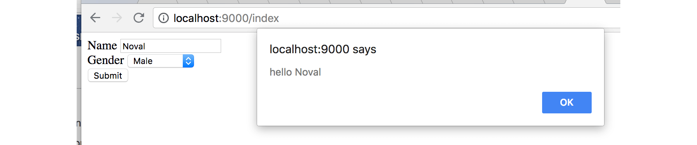
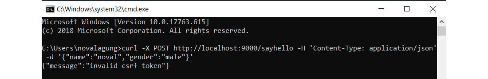

C.13. CSRF
Pada bab ini kita akan belajar tentang serangan Cross-Site Request Forgery (CSRF) dan cara mengatisipasinya.
C.13.1. Teori
Cross-Site Request Forgery atau CSRF adalah salah satu teknik hacking yang dilakukan dengan cara mengeksekusi perintah yang seharusnya tidak diizinkan, tetapi output yang dihasilkan sesuai dengan yang seharusnya. Contoh serangan jenis ini: mencoba untuk login lewat media selain web browser, seperti menggunakan CURL, menembak langsung endpoint login. Masih banyak contoh lainnya yang lebih ekstrim.
Ada beberapa cara untuk mencegah serangan ini, salah satunya adalah dengan memanfaatkan csrf token. Di setiap halaman yang ada form nya, csrf token di-generate. Pada saat submit form, csrf disisipkan di request, lalu di sisi back end dilakukan pengecekan apakah csrf yang dikirim valid atau tidak.
Csrf token sendiri merupakan sebuah random string yang di-generate setiap kali halaman form muncul. Biasanya di tiap POST request, token tersebut disisipkan sebagai header, atau form data, atau query string.
Lebih detailnya silakan merujuk ke https://en.wikipedia.org/wiki/Cross-site_request_forgery.
C.13.2. Praktek: Back End
Di golang, pencegahan CSRF bisa dilakukan dengan membuat middleware untuk pengecekan setiap request POST yang masuk. Cukup mudah sebenarnya, namun agar lebih mudah lagi kita akan gunakan salah satu middleware milik echo framework untuk belajar.
Di setiap halaman, jika di dalam html nya terdapat form, maka harus disisipkan token csrf. Token tersebut di-generate oleh middleware.
Di tiap POST request hasil dari form submit, token tersebut harus ikut dikirimkan. Proses validasi token sendiri di-handle oleh middleware.
Mari kita praktekkan, siapkan projek baru. Buat file main.go, isi dengan kode berikut.
package main
import (
"fmt"
"github.com/labstack/echo"
"github.com/labstack/echo/middleware"
"html/template"
"net/http"
)
type M map[string]interface{}
func main() {
tmpl := template.Must(template.ParseGlob("./*.html"))
e := echo.New()
// ...
e.Logger.Fatal(e.Start(":9000"))
}
Nantinya akan ada endpoint /index, isinya menampilkan html form. Objek tmpl kita gunakan untuk rendering form tersebut. API echo renderer tidak digunakan dalam bab ini.
Siapkan routing untuk /index, dan registrasikan middleware CSRF.
const CSRFTokenHeader = "X-CSRF-Token"
const CSRFKey = "csrf"
e.Use(middleware.CSRFWithConfig(middleware.CSRFConfig{
TokenLookup: "header:" + CSRFTokenHeader,
ContextKey: CSRFKey,
}))
e.GET("/index", func(c echo.Context) error {
data := make(M)
data[CSRFKey] = c.Get(CSRFKey)
return tmpl.Execute(c.Response(), data)
})
Objek middleware CSRF dibuat lewat statement middleware.CSRF(), konfigurasi default digunakan. Atau bisa juga dibuat dengan disertakan konfigurasi custom, lewat middleware.CSRFWithConfig() seperti pada kode di atas.
Property ContextKey digunakan untuk mengakses token csrf yang tersimpan di echo.Context, pembuatan token sendiri terjadi pada saat ada http request GET masuk.
Property tersebut kita isi dengan konstanta CSRFKey, maka dalam pengambilan token cukup panggil c.Get(CSRFKey). Token kemudian disisipkan sebagai data pada saat rendering view.html.
Property TokenLookup adalah acuan di bagian mana informasi csrf disisipkan dalam objek request, apakah dari header, query string, atau form data. Ini penting karena dibutuhkan oleh middleware yang bersangkutan untuk memvalidasi token tersebut. Bisa dilihat, kita memilih header:X-CSRF-Token, artinya csrf token dalam request akan disisipkan dalam header dengan key adalah X-CSRF-Token.
Isi value
TokenLookupdengan"form:<name>"jika token disispkan dalam form data request, dan"query:<name>"jika token disisipkan dalam query string.
Selanjutnya siapkan satu endpoint lagi, yaitu /sayhello, endpoint ini nantinya menjadi tujuan request yang di-dispatch dari event submit form.
e.POST("/sayhello", func(c echo.Context) error {
data := make(M)
if err := c.Bind(&data); err != nil {
return err
}
message := fmt.Sprintf("hello %s", data["name"])
return c.JSON(http.StatusOK, message)
})
Pada handler endpoint /sayhello tidak ada pengecekan token csrf, karena sudah ditangani secara implisit oleh middleware.
C.13.3. Front End
Buat view.html, lalu isi kode berikut.
<!DOCTYPE html>
<html>
<head>
<title></title>
</head>
<body>
<form id="form" action="/sayhello" method="POST">
<div>
<label>Name</label>
<input type="text" name="name" placeholder="Type your name here">
</div>
<div>
<label>Gender</label>
<select name="gender">
<option value="">Select one</option>
<option value="male">Male</option>
<option value="female">Female</option>
</select>
</div>
<div>
<input type="hidden" name="csrf" value="{{ .csrf }}">
<button type="submit">Submit</button>
</div>
</form>
<script src="https://code.jquery.com/jquery-3.3.1.min.js"></script>
<script type="text/javascript">
// JS code here ...
</script>
</body>
</html>
Bisa dilihat, sebuah form disiapkan dengan isi 2 inputan dan satu buah tombol submit.
Sebenarnya ada tiga inputan, namun yang satu adalah hidden. Inputan tersebut berisi nilai csrf yang disisipkan dari back end.
Pada saat tombol submit di-klik, token tersebut harus disisipkan dalam AJAX request yang mengarah ke /sayhello.
Sekarang buat script JS-nya. Siapkan sebuah event listener submit untuk element form, isinya adalah AJAX. Ambil informasi inputan nama dan gender, jadikan sebagai payload AJAX tersebut.
$(function () {
$('form').on('submit', function (e) {
e.preventDefault()
var self = $(this)
var formData = {
name: self.find('[name="name"]').val(),
gender: self.find('[name="gender"]').val(),
}
var url = self.attr('action')
var method = self.attr('method')
var payload = JSON.stringify(formData)
$.ajax({
url: url,
type: method,
contentType: 'application/json',
data: payload,
beforeSend: function(req) {
var csrfToken = self.find('[name=csrf]').val()
req.setRequestHeader("X-CSRF-Token", csrfToken)
},
}).then(function (res) {
alert(res)
}).catch(function (err) {
alert('ERROR: ' + err.responseText)
console.log('err', err)
})
})
})
Tambahkan header X-CSRF-Token di AJAX request seperti pada kode di atas, isinya diambil dari inputan hidden csrf. Nama header sendiri menggunakan X-CSRF-Token.
Karena di konfigurasi middleware csrf di back end TokenLookup adalah header:X-CSRF-Token, maka header dengan nama X-CSRF-Token dipilih.
C.13.4. Testing
Sekarang jalankan aplikasi lalu akses /index untuk mengetes hasilnya. Silakan melakukan skenario testing berikut.
- Buka laman
/index, form akan muncul. - Pada saat rendering output
/index, disisipkan juga token csrf yang di-generate oleh middleware pada saat endpoint ini diakses. - OK, sekarang laman form sudah muncul.
- Isi inputan form.
- Klik tombol submit.
- Di event submit tersebut, sebuah AJAX dipersiapkan dengan tujuan adalah
/sayhello. - Di dalam AJAX ini, token csrf yang sebelumnya disisipkan, diambil lalu ditempelkan ke AJAX.
- AJAX di-dispatch ke
/sayhello. - Sebelum benar-benar diterima oleh handler endpoint, middleware secara otomatis melakukan pengecekan atas token csrf yang disisipkan.
- Jika pengecekan sukses, maka request diteruskan ke tujuan.
- Jika tidak suses, error message dikembalikan.
- Pengecekan adalah sukses, alert message muncul.
Hasilnya:

Coba tembak langsung endpoint nya lewat CURL.
$ curl -X POST http://localhost:9000/sayhello \
-H 'Content-Type: application/json' \
-d '{"name":"noval","gender":"male"}'

Hasilnya error, karena token csrf tidak di-sisipkan.
Lewat teknik pencegahan ini, bukan berarti serangan CSRF tidak bisa dilakukan, si hacker masih bisa menembak endpoint secara paksa lewat CURL, hanya saja membutuhkan usaha ekstra jika ingin sukses.
- Echo, by Vishal Rana (Lab Stack), MIT license